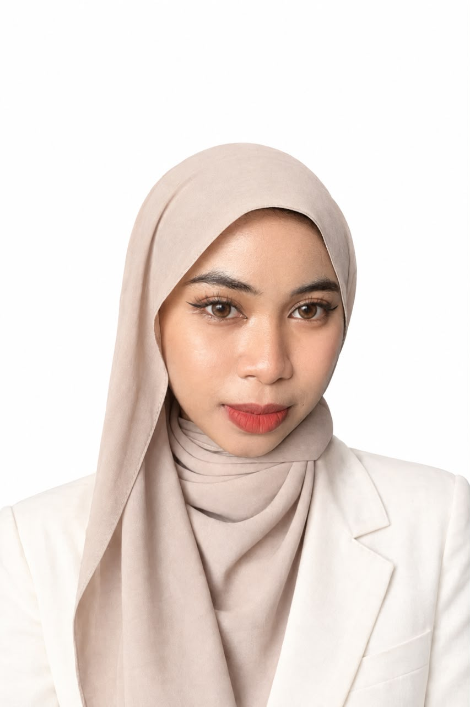

Bruz Studio
Built around
your problem.
Software, AI and web experiences shaped around the work.
Studio services ↗Great ideas deserve great engineering. We build intelligent software and digital products to make them real.
Custom work for your business. Focused products built by Bruz.
Software, AI and web experiences shaped around the work.
Studio services ↗Practical tools for business data and documents.
Our products ↗A focused response to a real operational challenge.
A clearer view for capture, quality review and action.
Current products and their honest status.
Field capture, quality review and action in one view.
Open case study ↗Business information shaped into useful context.
Discuss the product ↗Ingestion and image-quality checks are built. Recognition, review and export are planned.
Discuss the product ↗The engineers behind the work.
